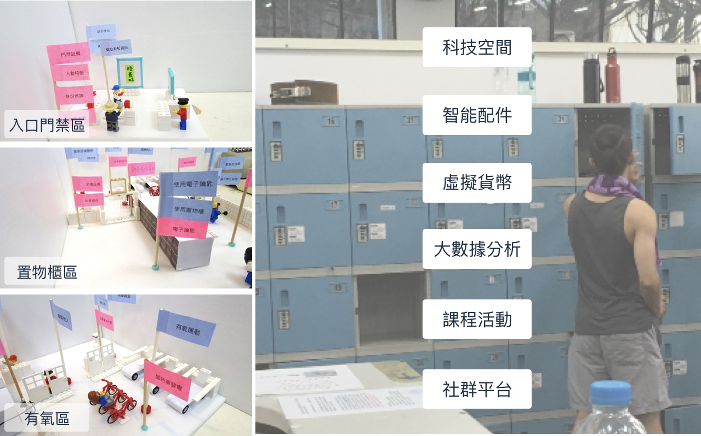

Smart Sport Field for CYCU
Designing Sport Coin Service for Chung Yuan Christian University School Gym.
How I participated:
This is a user experience design to embed "Sport Coin", a bonus system resembles points or credits, into the school gym. This new service aimed at encouraging people to practice exercise more and to help them stay with the habit. To achieve, we must leverage the existing technologies including IoT, social media, and smart wearables.
My role was to design interaction models for the corresponding scenarios. We first observed users, and later got insights from the interviews. Then, we surprisingly found out social binding is a strong force in helping people build up the habit of exercising. Along with the stories we coolhunted, we finally proposed several novel yet reasonable scenarios for Sport Coin.
Timeline: 2 months